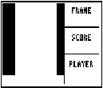

: ClrDraw 0Xmin 94
| HOME >> Tutorials >> Tutorial 19 >> Bowling Lane |
Bowling Lane
This code is a code for the bowling lane that I use in my game Supreme Bowling with Link Play v4.6. It contains lines, shading, and text. To download the game, visit the Supreme Bowling information webpage. Here's the code:
:
ClrDraw
0
 Xmin
94
Xmin
94 Xmax
-62
Xmax
-62 Ymin
0
Ymin
0 Ymax
Shade(-55,5,0,11
Shade(-55,5,53,60
Vertical 60
Line(60,-18,94,-18
Line(60,-39,94,-39
Line(12,-55,52,-55,0
Line(61,-55,94,-55,0
Text(2,68,"FRAME
Text(23,68,"SCORE
Text(44,66,"PLAYER
StorePic 3
Ymax
Shade(-55,5,0,11
Shade(-55,5,53,60
Vertical 60
Line(60,-18,94,-18
Line(60,-39,94,-39
Line(12,-55,52,-55,0
Line(61,-55,94,-55,0
Text(2,68,"FRAME
Text(23,68,"SCORE
Text(44,66,"PLAYER
StorePic 3

This isn't too much code actually. Notice how I have those two lines that erase the lines that Shade( drew. To get back to Tutorial 19, click here.